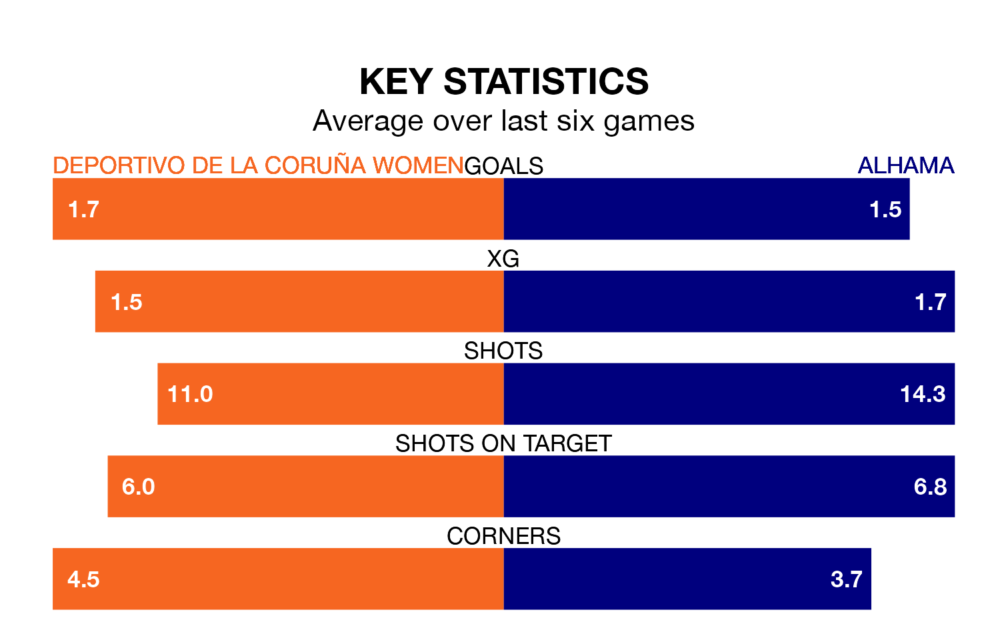

Two of the Primera Federación Femenina's top sides face each other at Ciudad Deportiva de Abegondo-Campo 2 in Saturday's early kick-off, when table-topping Deportivo de La Coruña Women host fourth-placed Alhama.
Deportivo de La Coruña have picked up 13 wins and five draws from 19 games so far this season, and sit nine points above the visitors going into the 11am match.
Alhama, meanwhile, have won 10 and drawn five, picking up 35 points.
With 31 goals in 19 games so far this season, Deportivo de La Coruña are the league's joint-third-highest scorers with 1.6 goals per game. And they are conceding fewer than average, letting in 11 goals at a rate of 0.6 per game.
Alhama are also above average scorers, with 1.6 goals per game, compared to a league average of 1.2. They have conceded 1.1 goals per game.
The home side are in good form in the Primera Federación Femenina, with four wins and two draws from their last six games.
With three wins and two draws over that period, the visitors' form is worse – they have taken 11 points from 18, compared to Deportivo de La Coruña's 14.
Deportivo de La Coruña's last match was on February 17, a 2-0 win against Deportivo Alavés Women.
Alhama drew 2-2 with Albacete Women last time out, on February 18.
Updated: 09:34 (UTC), 08/03/24